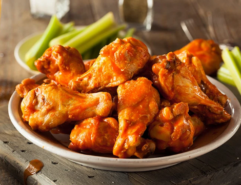

Chicken Wings

Description
Customizable, infinitely desirable, endlessly addicting, and full of flavor: ladies and gentlemen, my favorite food of all time — Chicken Wings.
Who doesn't like finger food anyway?
Chicken wings exist in this heavenly realm where they are fantastic super spicy with buffalo, amazing cool and flavorful with ranch, but also can be sweet and delicious with bbq sauce?!?!
Get this. Get this. You can even dip bbq or buffalo wings and everything in between with ranch or blue cheese.
Don't even get me started with dry rub wings or a mix of both like garlic parm!
I have made my point.
Chicken wings are the best food of all time and here is a simple and delicious way to make them!
Ingredients
You'll need at least one baking sheet or similar. Mixing bowl may help but not required.
- chicken wings, legs and/or drums, either frozen or thawed out. (thawed out before starting recipe though)
- season and coat as desired (I like to use a little oil, then salt, pepper, garlic powder, onion powder, and paprika as a base)
- carrots and/or celery (serve with wings, they act as a palate cleanser and a way to cool down the mouth if eating spicy wings)
Steps
- Preheat the oven to 385 degrees before doing anything else.
- Toss wings with little bit of oil, either by hand or mixing bowl.
- Coat wings with desired base seasonings, either by hand or dumping into same mixing bowl and tossing.
- Throw wings into oven (once preheated) for minium ~30 minutes but depending on size. (Check wings often, we don't want dry chicken!)
- Serve with desired sauce and extras. (pepper flakes, parmesan cheese, etc. I like to eat mine with a mix of parmesan cheese, frank's red hot sauce, and minced garlic!)
- Serve with carrots and/or celery. Enjoy!
Back to Recipes